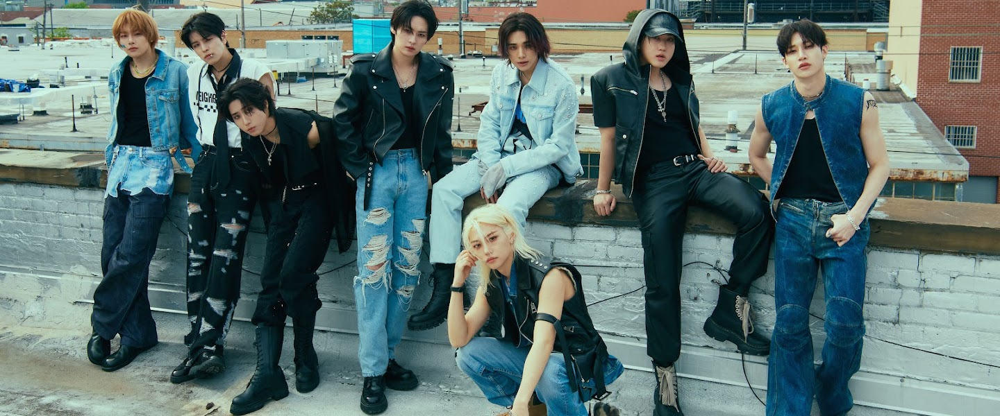
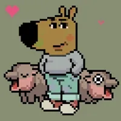
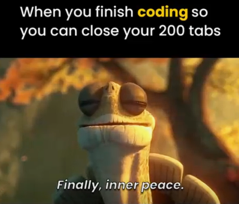

Music Bar
Totally didn't put this part because of Stray kids🤭🤭
 Their Youtube
That was clickbait ha🤣🤣🤣!!!! Go on with checking the rest of the website. Bye.
🌐Welcome to EwaNet: My Personal Internet Portal
EwaNet is a retro-themed personal internet portal designed to:
- Showcase my hobbies and personality.
- Pay homage to the playful, homebrew websites of the early web era.
- Serve as a fun and interactive web development project.
About Ewa
Well, I'm a gap year student, likes food but forgets to eat on time somehow. hmmmm....
Everything public about me is on this website. Please check it out😁. I didn't know what else to write.
P.S
 I would really love a dog but this is all I've got😥😥.
I would really love a dog but this is all I've got😥😥.
My Links
- Github
- Discord: ewa-edun
- Girl's girl Podcast
- Girl's girl Instagram A podcast with my friends. Feel free to check it out too.
Todays Vibes
The Codedex Hackathon spanned over three days. So what I did during that time....
- Day 1: Gosh! I slept on the first day😴😴. Me fr
- Day 2: Ouuhhh. The major work!! Coding, googling, finding memes, and repeat😪😪
- Day 3: Submitted!! and finally went to sleep. No, I'll catch up to my watchlist first. Then go to sleep. Just one more episode I said🤡


Random Thoughts
Didn't know what to do with the extra time. I could have slept So I put this here. Well enjoy then.
- If I forget to save my work, did I ever really code it?
- Is it just me, or do all tech issues happen after 10 PM.
- Why do I always find the error after Googling it for 10 minutes?
- Why do I have 20 tabs open, but forget what I was searching for?
- Is it that most tech companies have zero clue how to make chargers last longer? or what?
- Is my Wi-Fi signal on a break or just mad at me? I promise I didn't offend it.
- I suddenly know how to code after watching YouTube at 2 AM.
- Am I the only one who thinks my phone vibrates randomly just to confuse me?
- Why do I have the perfect reply to a message... after I hit send